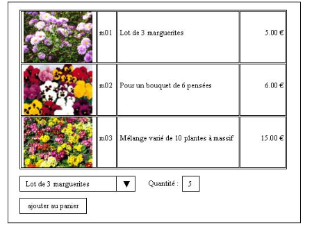
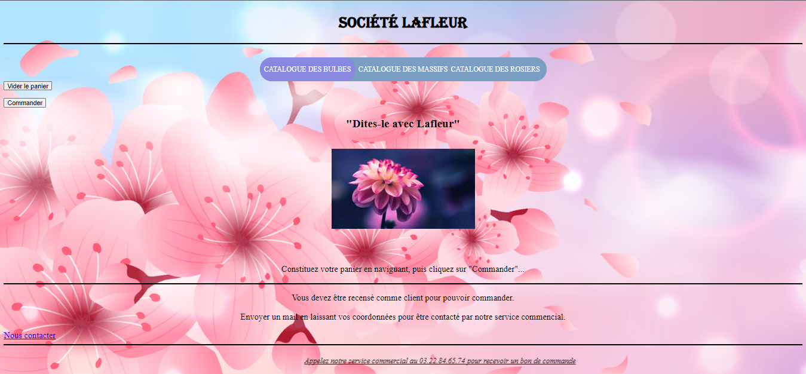

LaFleur
Projet
Nous devions réaliser un site vitrine pour une entreprise de vente de fleurs en ligne.Le site lafleur est composé de plusieurs pages dont une page d'accueil et une page contenant les produits, les fleurs vendus sont répertoriés dans un tableau à l'aide d'une référence, un nom, une photo ainsi que leurs prix.
Schèma de la page d'accueil du site

Tableau des produits
Amélioations
Le site ensuite est rendu dynamique en créant une base de donnée répertoriant les différentes fleurs et en améliorant la version du site en utilisant du php ainsi que des requêtes SQL pour récupérer les informations des fleurs.
Une page de contact et de panier de commandes est ensuite rajouté suite à cette transition en php pour que le client puissent sélectionner et commander les fleurs qui lui intéressent.
